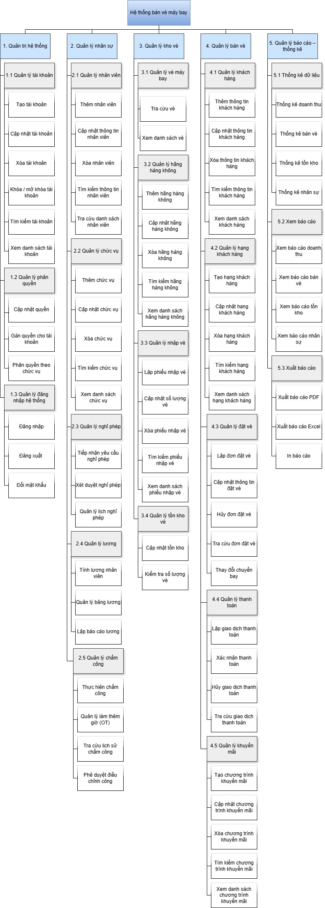
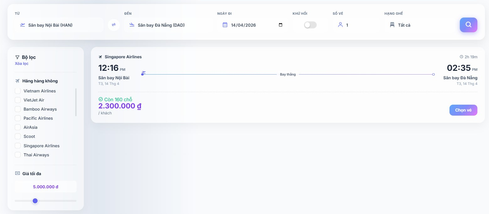

Business Analyst Intern candidate · Information Systems, Saigon University · Ho Chi Minh City
I am a final-year Information Systems student who works at the point where business needs become software. In my projects I run requirement surveys, write specifications and business rules, model processes, and test the result against what was agreed.
Business Analyst and front-end · Team of 2 · 15 weeks, spring 2026 · Enterprise Information Systems course
The problem
A business that distributes airline tickets ran sales, ticket stock, customers, staff and payroll by hand or across separate tools. Processing was slow, data was entered twice and errors were common, and managers had no single view of revenue.
My role
I owned requirements and the front-end. My teammate owned the data flow diagrams, the database and the back-end API. We shared testing.
What I did
Elicited and scoped requirements. I wrote and ran a 20-question survey covering both functional and non-functional needs. From the answers I set the scope: 17 needs in, and 3 explicitly out (airport and aircraft operations, delivery of physical tickets, and automatic validation of every manual entry).
Specified 8 business modules. For each one, from ticket inventory to HR and payroll, I described its functions, rules and purpose. The rules that mattered most:
Tickets can never be sold beyond available stock; staff are warned when 5 or fewer remain.
A ticket can be cancelled only 24 hours or more before departure, and the seat returns to stock.
Booking follows 5 steps: flight, fare and class, passengers, payment, confirmation with a booking code and e-ticket.
Payroll is calculated from attendance (22 standard working days, late after 08:05), reviewed, then locked.
Every change to sensitive data is logged with the user, time and values before and after.
Modeled the business functions. I drew the business function diagram, breaking the system into 5 areas: system administration, HR, ticket inventory, sales, and reporting.
Built and tested the interface. I designed and built 15 screens in React and Tailwind CSS, connected them to the API, tested the system and wrote the final report and user guide.

Business function diagram I drew for the system (labels in Vietnamese, as submitted). Five functional areas, each broken down to individual tasks. Scroll inside the frame to see the full diagram.

Step 1 of the booking flow, which I built: search by route, date and seat class, filter by airline and price, and see seats left before choosing.
Result
We delivered a working web system covering the in-scope modules, with role-based access for Admin, Manager and Staff and a full audit trail, plus a full project report and user guide.
Limits I documented
Flight data is entered manually rather than pulled from airline distribution systems, the system is web-only, and tickets are delivered by email only. The proposed next steps were a live connection to a global distribution system and a mobile app.
Textbook Q&A Assistant
Front-end and technical report · Team project · Sep 2026 to present · Modern Programming Technologies course
The problem
Students increasingly ask general AI chatbots about their lessons and get confident answers that may not match their textbook. They need answers they can check.
The product
Students upload their textbooks and ask questions. The assistant answers only from those books and cites the page for every claim. The decisions that shaped it:
When the book does not cover a question, the assistant says so instead of guessing.
Students can narrow a search by subject, grade, book series or page range. Choosing no source at all is rejected rather than searching everything.
Follow-up questions are rewritten using the last 3 turns, so "what about the opposite case?" still finds the right passage.
Each student's uploaded books are private to them.
My role
I built the learning interface: uploading books with progress tracking, choosing sources, streamed answers and citation cards that show the original page excerpt. I also wrote the technical report, including the project overview, the technology analysis and the end-to-end pipeline diagram.
Other projects
ReadRest: e-commerce bookstore
QA and business rule validation · Team of 5 · Dec 2025
I designed and ran test scenarios across the purchase flow (search, cart, checkout, payment, order tracking) and admin functions, checking each against its acceptance criteria. I found authorization gaps and edge-case failures such as expired coupons still applying and cart updates exceeding stock, and recommended consolidating role, stock and address data that different parts of the system each owned.
InteractHub: social media platform
Personal project · Solo · 2025
I wrote business rules for 8 feature areas before building anything, such as who can see a post at each privacy level and which events trigger a notification. Building them myself, with more than 100 API endpoints and 47 unit tests, showed me which details a developer needs from a specification and which ones are usually missing.
Writing sample
A user story with acceptance criteria, written from the AeroGate cancellation rule. Each criterion maps to one test case.
User story
As a ticketing staff member, I want to cancel a passenger's ticket, so that the seat can be sold again.
Acceptance criteria
Givendeparture is more than 24 hours awayWhenI confirm the cancellationThenthe ticket status becomes Cancelled, the seat returns to available stock, and the action is recorded in the audit log
Givendeparture is 24 hours away or lessWhenI try to cancelThenthe cancellation is blocked and the reason is shown
Skills
Business analysis
Requirement elicitation, scope definition, user stories and acceptance criteria, software requirements specifications, impact analysis
Modeling
Business function diagrams, data flow diagrams, BPMN, UML use cases, entity relationship diagrams
Data and technical
SQL, Python (pandas), REST API fundamentals, generative AI and retrieval-augmented generation
Tools
Figma, Draw.io, Notion, Excel and Google Sheets, Microsoft Office
Background
Education
B.S. in Information Systems, Saigon University, 2022 to 2027 (expected)
Experience
Freelance math tutor for secondary and high school students, 2024 to 2025. Agreed learning goals with parents and reported progress regularly.
Languages
Vietnamese (native). English for technical reading and project documentation; preparing for the TOEIC.
Contact
I am looking for a Business Analyst internship in Ho Chi Minh City. The fastest way to reach me is a message on LinkedIn or an email to ngocnhu010904@gmail.com.